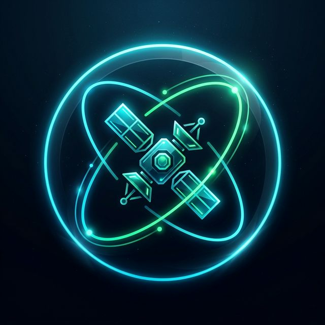
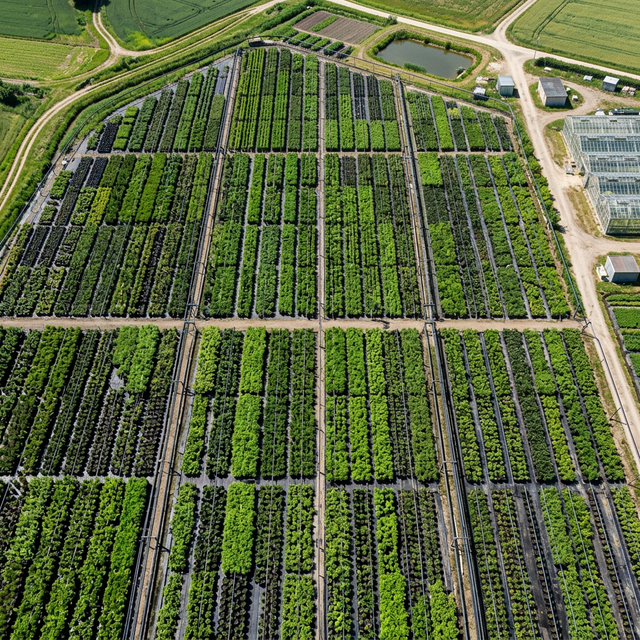

ORBIT-X
v0.0.0
MISSION // TITAN-1
UTC:
00:00:00
UPLINK OK
DNLINK OK
HW: SEARCHING...
LIVE MONITOR
DASHBOARD
AI ENGINE
SYS: NOMINAL
STRATEGIC INTELLIGENCE INTERFACE
Orbital Safety
NOMINAL
Agri Yield Confidence
0%
Field Health Index
0.00
AI Core Uptime
99.9%
SATELLITE COMPUTER VISION
GANDHIGRAM TERRAIN AUTO-SCAN

ANALYZING...
TERRAIN & AGRI-GEOSPATIAL MAP
GANDHIGRAM | SIRUMALAI MTS
CONJUNCTION RADAR
0 EVENTS
● TITAN-1
● DEBRIS
● WARNING
SYNCING NEURAL HUB...
●
ORBIT-ASSISTANT (API)
▲
SEND
LIVE MISSION TELEMETRY
OPEN RAW TERMINAL
CLOSE [ESC]